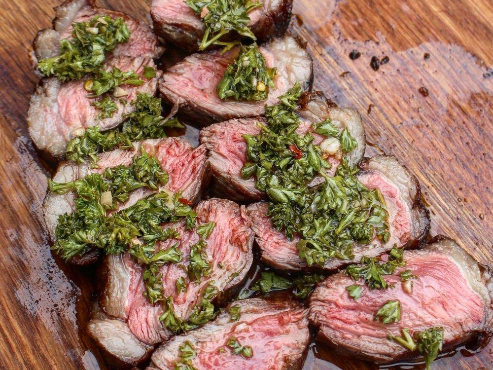

The Best Picanha Recipe

Description:
As someone who is obsessed with grilling, this is the #1 question people ask me:
What is your favorite thing to cook over fire? My answer is always Grilled Picanha.
If you do not know what I am talking about, picanha is a South American cut of beef that comes
from the rump region of the cow.
Beef picanha is sometimes called the top sirloin cap or the rump cap in the United States.
If you want more information about this cut, check out
this blog post
where I take a deep dive into picanha.
My favorite thing about it is how simple and delicious it is to cook.
Ingredients:
-
1 whole picanha with fat cap still on
-
2 tbsp of sea salt
-
Chimichurri
-
Olive Oil
Steps:
-
With picanha at room temperature, score the fat cap in order for the flavor to seep into the whole beef.
Lather with olive oil & season with sea salt on both side.
-
Use some Cowboy Hardwood Lump Charcoal to light fire and let burn for 10-15 minutes.
Once charcoal is white hot, push into one flat pile for direct grilling.
-
Place picanha flesh side down for 2 minutes, flip & sear the fat side for 2 minutes.
Pull off grill.
-
Slice the beef against the grain (horizontally) as to make multiple strips out of it.
Season the strips with olive oil and salt. Place back on grill.
-
Grill strips for 4-5 minutes per side or until they reach your desired internal temperature.
Some of the larger steaks will take longer as will some of the smaller steak be shorter.
Take off grill and let rest for 10 minutes.
-
Slice into steaks, top with Chimichurri & enjoy!
Buy meat from good butcher to make delicious Picanha steak.